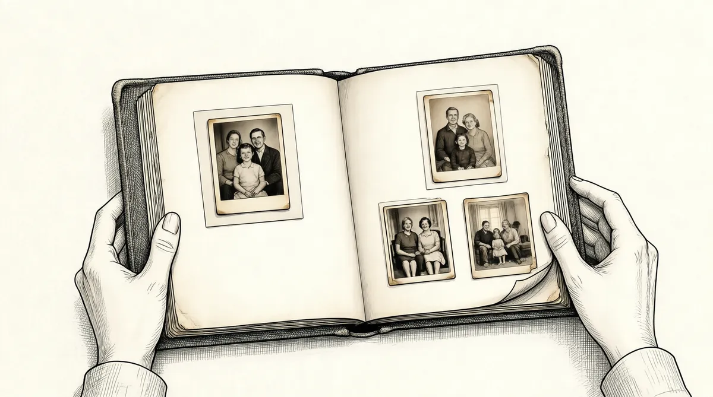

第60章 冰可乐

放疗结束的时候，苏珊嘴里火烧火燎，连续几天不能进食。医生又开始采用鼻饲管，她的嗓子堵着一块干厚的黏液。大部分时间她都在睡觉，但是每天都和女儿或科尔在萨克拉门托街散步，走几个街区的距离。旧金山的春天悄然而至，苏珊却依然裹着外套，戴着手套、围巾和耳罩保暖。
她不喜欢孤独。“我醒着的时候，你就不能坐在旁边的睡椅上翻翻杂志吗？”她和苏茜讲。接着她在纸上潦草地写下“WHT”，这是她父亲姓名的缩写，似乎暗指在孤独时就会焦虑的家族特点。
护士、科尔、女儿和约翰·麦凯布轮流照顾苏珊。约翰·麦凯布以前是苏珊的网球教练，搬到旧金山以来一直照顾苏珊，所以能够做到百分之百对她“付出”，而不会让她不由自主地“付出”。然而，其他人还是可能让她不由自主地“付出”，令她筋疲力尽。1周末，沃伦在的时候，就和苏珊一起坐在电视间看老片《欢乐一家亲》，有时候他穿着睡衣在房间走来走去，看看报纸。苏珊喜欢让他待在自己身边，他让她感到安全——但是几十年来，她“付出”、他“得到”的习惯不会一时间荡然无存。有时候，苏珊因放疗极度痛苦，就连沃伦都不能接近她。但是，他一直都在努力以一种前所未有的方式关心着全家人的日常生活。为了让女儿从日复一日的照顾母亲的操劳中休息一下，从公寓走出去透透气，沃伦就带女儿到约翰尼·罗基餐厅吃汉堡。其他时间他和沙伦在一起。
他完全了解苏珊放射治疗的细节。“她的味蕾没有完全消失。我和放疗科医生谈了这一点，他们说可能舌头的局部没有因放疗而损伤，因而保全了大量味蕾。”
沃伦·巴菲特向来不愿提及感冒一词，总是用“不舒服”来表达生病之意；一提到健康问题就不自然地转移话题、承认自己不懂许多基本的解剖学常识——现在居然开始用“放疗科医生”这样的专业词汇，并为了妻子的健康开始了解一些医学知识了。
但是，在他对苏珊的身体恢复越来越乐观的时候，自己却变得烦躁而空虚。2004年的商业活动开始让他奔走于各地，繁忙中还要每个周末到旧金山看望苏珊。不同于2003年带着荣耀的频繁差旅，这一年似乎是完全不同的一年。而且，就在2004年年初，他又失去了长期以来的支柱力量。沙伦·奥斯伯格和他的妹妹伯蒂一起去南极洲了，他们要很久之后才会回来。在南极洲穿越冰河的船上，沙伦只能偶尔发封电子邮件和沃伦保持联系。巴菲特的大部分时间都在起草致股东的信，不时通过邮件和卡罗尔·卢米斯沟通，而且在美国公司做培训，是义务的资深咨询人士，已然是一位商界元老。巴菲特一直坚持这样的观点：贪婪是长期战略，并非权宜之计。人们拥护他是因为人们喜欢他凡事直击要害的作风、相信他所作的正误判断。尽管拥有巨额财富，超越了自己最狂野的梦想，他还是不错过可以赚更多钱、可以更快地赚钱的每一个机会。这让他拥有各种权威力量，也赢得人们的广泛尊敬。他不像许多商人一样让人敬畏，而是让人崇拜。
著名人物都到奥马哈朝拜这位商界元老，或者在各种活动中找到他，要求通过他的影响力得到帮助。体育明星迈克尔·乔丹、勒布罗恩·詹姆斯、小卡尔·里平肯和亚历克斯·罗德里格斯都向他征求意见。比尔·克林顿都利用午餐时间就自己新设立的慈善组织募集资金的问题向沃伦咨询。巴菲特和迈克·布隆伯格也是好朋友，与约翰·麦凯恩关系融洽，与老布什一家和其他共和党人，如克里斯·谢伊思的关系都很好。他支持参议员约翰·克里参加总统竞选，而克里却不是候选人，不同于支持施瓦辛格出任加州州长的竞选——施瓦辛格确实是候选人——巴菲特发现自己在支持一位没有吸引力的受人尊敬的参议员。
克里平淡无奇的竞选活动表明，巴菲特在2004年的工作完全没有局限于商业活动。许多首席执行官，如通用电气的杰弗里·伊梅尔特、富士施乐的安妮·马尔卡希和J·P·摩根的杰米·戴蒙都来到奥马哈向巴菲特请教。2网络搜索公司谷歌同年夏天上市，两位合伙人谢尔盖·布林和拉里·佩奇也亲自拜访，他们非常佩服他为股东写信的做法。去年秋天，玛莎·斯图尔特因涉嫌欺骗政府、内线交易被起诉——但没有遭到指控，之后她和公司的首席执行官沙伦·帕特里克一起到奥马哈拜访巴菲特。巴菲特请斯图尔特和帕特里克一起吃了午餐，但是没能解决斯图尔特面临的法律问题。
白领诈骗案的起诉条件快速完善，部分原因是白领诈骗案越来越多。纽约总检察长埃利奥特·斯皮策一直无情地治理商业腐败和华尔街存在的腐败现象，现在他带领美国证券交易委员会和司法部开展两人三足赛跑，看看哪一方的起诉更加狂热激情。其他人都拼命地与斯皮策的步调保持一致；他们的控告最后都整合为一个综合案件受理。事实证明，斯皮策的超级创新能力表现在应用互联网新型电子工具——尤其是电子邮件、将媒体作为超级武器和掌握神秘的纽约法令方面，通过《马丁法案》，他得到了无限的权力，只按照他个人的（其实并不存在的）观点进行起诉判决。
斯皮策利用这些工具迫使两位著名的首席执行官辞职——巴菲特的商业合作伙伴汉克·格林伯格（AIG的前任首席执行官），和他的儿子杰弗里·格林伯格（马什麦克里安保险公司的前任首席执行官）。美国公司笼罩在一片恐惧之中。斯皮策非常成功地操纵着媒体，当时流行的一个讽刺笑话就是他为政府节省了大笔起诉和审判费用。过去十分尊敬白领犯人的审判团现在像对待其他犯人一样天天送他们进监狱；在新的强制判刑程序出台后，法官开始对他们进行严肃判决。一些蓄意的破坏确实应该严肃处理。贪婪、傲慢、缺乏执行力这些行为过去从未被列入法律制裁的范围。就在股票期权和互联网泡沫以极快的速度充实高级经理人的钱包之时，人们提出了强烈的反抗。巴菲特——和其他美国公司的人们一样——还没有完全适应这种新环境；他的观念还是原始的：按照前美国证券交易委员会执法主管斯坦利·斯波金和美国律师办公室的奥托·奥伯迈克的谨慎检举标准来定义的；在所罗门公司的案例中，保罗·莫泽尔只在监狱度过了4个月的时间，因古特弗罗因德没有及时汇报他的罪状，结果险些引起整个金融体系的下滑。伯克希尔–哈撒韦自身发生的一系列问题最终让他改变了观点。
巴菲特总是亲自到机场迎接前来拜访的客人，直接到他的办公室，一路上会让客人坐立不安（如果他们根本没有引起他的注意）。他会花几个小时听客人讲述自己的问题，提出一些建议，接着请他们在Gorat’s牛排店吃牛排和土豆饼。他告诉人们在年度报告中要言辞直率，付给员工的薪资要和股东的分红看齐，不要根据华尔街分析师的建议经营公司，处理问题要及时，不要有财务欺诈的行为，选择优秀的员工退休金计划规划人员。有时候人们会问如何管理他们自己的资金，他就提出一些基本观点，但从不涉及股票投资方面的技巧。
对那些坚持认为审查首席执行官的生活毫无意义的人们，巴菲特就以一种作为首席执行官可以理解的方式讲述“98层”的道理。站在高处必须客观地审视别人。那么，如果他们不慎职位降低或者损失钱财该怎么办呢？他们还有亲人，还有健康的身体，还有机会为人类做一些有意义的事情，所以应该努力珍惜自己拥有的幸福，而不是从此带着诅咒生活。
很显然，如果我们从一座大厦的一层走到100层，再返回到98层，此时看到风景就没有开始的时候从一层走到二层可以看到更多风景那样让人高兴。但是我们也必须摆脱那种想法，毕竟还是在高高的98层。
很多时候他认为自己在高高的100层。然而，2004年春显然是退回到98层的一段时光。苏珊接受放疗的那段日子让他在等待中失去耐心，春天结束的时候她终于可以进行核磁共振检查，确认放疗是否杀死了所有的癌细胞。生意也存在诸多问题：巴菲特认为在给公司带来更多活力方面，进行新一轮并购以及股票投资方面，他已经“黔驴技穷”。伯克希尔–哈撒韦当时有大约400亿美元现金或约当现金，这不是“乐观的情形”。3
伯克希尔–哈撒韦旗下的大多数公司都运作良好——就连一直问题频出的通用再保险公司也彻底扭转败局，从2003年开始赢利。但是GEICO又卷入了一场艰难的价格战，与头号对手进取公司争抢客户。GEICO在1999年推出一段广告，塑造了颇受欢迎的新形象：GEICO壁虎。但是GEICO的网页设计落后于进取公司，在进取公司的网站上，客户可以边比较边购买。10年来巴菲特一直在考虑互联网和汽车保险的事情；他在华盛顿GEICO总部参加会议的时候，一次又一次地提到这样一句话：“制胜的关键是互联网。”他迫不及待地期待互联网发展的高潮。伯克希尔董事会新增加了一位成员，前微软公司高管夏洛特·盖曼，她是董事会的第一位女性，她的加入使董事会的平均年龄实现了年轻化。然而，巴菲特说他不是为了平衡年龄结构而选择董事会成员。他希望董事会成员“有主人翁精神、有商业头脑、关心公司发展而又真正具有独立精神”。4目前，巴菲特派沙伦·奥斯伯格和盖曼一起到华盛顿，帮助GEICO公司加速网站改良。“我对GEICO有信心”，他说，同时不忘强调：制胜的关键是互联网——最近习惯使用的口头禅。
巴菲特对GEICO投入的精力最多，仅仅是因为热爱GEICO。他非常赞赏托尼·奈斯利和联合首席执行官卢·辛普森，在致股东的信中第一次夸耀他们的投资记录。过去25年中，辛普森实现了年复利回报率20.3%的水平，每年都高于市场平均水平6.8个百分点。他选择购买的股票不同于巴菲特，但方法是相同的，他的投资业绩几乎与巴菲特本人的业绩相当。显然正因为此，巴菲特才授予他更多自主权、支付丰厚的薪水。辛普森完全有资格成为“格雷厄姆——多德都市的超级投资者”。然而，竞争越来越激烈，我们必须承认超级投资者的工作也越来越难做。
尽管如此，寻找新的投资完全不及伯克希尔寻找新人的工作辛苦。可口可乐又一次陷入梦魇。戈伊苏埃塔去世后，可口可乐公司的业绩逐季逐月不断下滑。会计操纵如影随形一般出现在可口可乐的收入报表中；股价已经从80美元下跌到50美元。按比例来讲，可口可乐目前在60层上下徘徊。
道格·达夫特反复无常、诡计多端的特点尽人皆知；他上任后一些资深的管理人员选择了辞职离开。5他不断模仿笨拙的广告，为4款主要的可乐产品精心设计所谓的推广妙计，结果却收效平平。62000年可口可乐并购桂格燕麦未果，而百事可乐并购佳得乐取得巨大成功。后来，有内部人士举报可口可乐为了吸引长期客户汉堡王，对一种名为冰可乐的饮料的营销测试结果进行了舞弊操纵。举报人还透露可口可乐财务欺诈，美国证券交易委员会、联邦调查局和美国律师办公室纷纷开始调查。公司的股价下跌到43美元。巴菲特对这些问题背后隐藏的“控制收入”的做法忍无可忍，华尔街的分析师对某个公司收入的预测诱使经理人为了“实现数字目标”而进行暗中操纵，以此达到或超过“舆论”期望、取悦投资者。大多数公司都努力达到甚或超越华尔街的预期，不会单纯地如实报告收入状况，就连每股一分钱的下跌都仿佛会使这些公司出问题，继而就是股票价格急转直下。因此，公司声称他们“必须”控制收入，尽管他们知道这种做法是错误的，就像自己往火坑里跳那样。但是“控制收入”其实是一种庞氏骗局，长期下去，欺诈的雪球越滚越大，结果就会酿成盗窃罪。
考虑到控制收入给人们带来的不良影响，我就恨之入骨。控制收入的做法其实就是小不改酿大错。就像从收银机里偷走5美元，对自己说我一定会还回去的。但你肯定不会还回去，而且下一次就会偷10美元。一旦开始这么做，就会吸引更多人，形成一个熟悉此道的团伙，人们偷窃的手段越来越高明，越来越娴熟，越偷越多。在控制收入的做法暴露后，我就开始讲这样的道理，我告诉人们，“现在就除去我们心头的不快吧，不必配合分析师作什么预言。我们就坦率报告每年的收入，管它是多是少。”7
巴菲特希望退出。在人们问及最严重的错误选择之时，他不再列数自己的“疏忽罪”，而是说“参与董事会的工作”。他厌倦了这种束缚手脚的生活。可口可乐改变了公司政策，以前要求董事会成员在74岁退出，现在都不要求到那个年纪的董事会成员递交辞呈。离开可口可乐公司的董事会，意味着一生热衷于董事会工作的他光荣卸任了。但是所罗门公司的救星此刻对一个陷于困境的公司故意怠慢犹如在股市中亮出利刃。“我不愿意继续留在董事会了，只是不忍扔下其他几个董事会的同事”处理可口可乐的棘手问题，巴菲特说。当然他递交的辞呈还是被拒绝了。外界将此看作朋党成员为了继续安逸的日子而进行的一场权力较量。巴菲特不知道还有多少痛苦在等待着他。
股东签署的委托书将巴菲特的名字列入候选董事名单后，机构股东服务公司就告诉客户不要投票选举巴菲特。机构股东服务公司是一个强有力的机构，代表机构投资者决定股东投票、进行投票代理工作。机构股东服务公司声称巴菲特作为审计委员会成员所拥有的自主权可能会受到这样的一个事实影响——那就是DairyQueen和麦莱恩公司等伯克希尔–哈撒韦旗下的公司购买的可口可乐产品达1.02亿美元。一旦利益冲突的丑闻动摇了各类机构（包括从教堂到军队、政府、商业领域和非营利组织）的信心，利益冲突方面的控告和管理方面的问题就会升级。可口可乐董事会的朋党成员就会受到其他方面的攻击，但是机构股东服务公司在处理利益冲突方面缺乏轻重缓急之分。而且当时处理业务也没有轻重缓急之分（公平地讲，业内许多人士都拿着高于自己能力的工资）——无论如何都是失衡。伯克希尔–哈撒韦购买的可口可乐产品相对于公司拥有的可口可乐股票来讲只是小巫见大巫。伯克希尔–哈撒韦拥有的可口可乐股票数额巨大，作为可口可乐审计委员会成员和董事会成员，他如何进行折中呢？8
然而，机构股东服务公司的规则建立在许多条款基础之上，不会根据实际情况进行回旋。CalPERS，强大的加利福尼亚州公共雇员养老基金，也决定不支持一半数量的可口可乐董事会成员，其中包括巴菲特，因为巴菲特任职的审计委员会同意审计做一些非审计工作。9CalPERS在审计委员会占有重要位置，这么做就是高射炮打蚊子。
巴菲特当众讲了自己高射炮打蚊子的笑话，说他买通CalPERS和机构股东服务公司集体投票反对他，希望借此退出可口可乐的董事会。但实际上他这么说简直就是疯了，特别是对机构股东服务公司。他明显表示伯克希尔–哈撒韦拥有的几十亿美元可口可乐股票完全胜过伯克希尔–哈撒韦购买的可口可乐产品。
如果我是街上的醉汉，他们提及的这些数目确实巨大，但是我拥有可口可乐8%的股份，我们有更多钱投在可口可乐。我怎么可能在持有这么多可口可乐股票的时候不支持可口可乐而支持DairyQueen呢？
赫伯特·艾伦在《华尔街日报》发表了一段感人的文字，引用了萨勒姆女巫受审案中的话，说当时的情况就是“愚笨的人们指控富有智慧而天赋的人们，说他们就是施魔法的女巫，并处死他们……现在机构股东服务公司的妖怪也那么讲，没有人知道沃伦才是真正的‘女巫’”。10
在问及董事会成员的时候，他们一致认为巴菲特是他们理想的董事。“我们愿意给巴菲特洗车，只要他留在董事会……世界上没有人不愿意让他留在董事会……CalPERS的行动表明他们在治理公司方面的极端愚笨……就像NFL（美国橄榄球大联盟）的教练非要选择乙级队员中不知名的四分卫，而放弃选择超级杯队员中的四分卫那样……如果作为股东你面临着选择沃伦·巴菲特是否留在董事会，你一定希望他留下来。”11《金融时报》将机构股东服务公司比作治理公司的达斯·维德，举例说明机构股东服务公司采用“限定的教条”。12CalPERS和机构股东服务公司溅了自己一身污水，狼狈不堪。“一帮丑恶而喜欢自我推销的平民主义者，”一位退休的首席执行官在调查中这样说，“你们怎么会认为自己可以投票反对他参加董事会呢？怎么会认为那样做是讨好股东的做法呢？多么荒唐！”13
为了改革审计委员会而将巴菲特逐出董事会的做法犹如病人避医一般。可口可乐董事会需要的是更多的巴菲特，而不是相反。机构股东服务公司做出的反应居然是他们没有让人们投票反对巴菲特，而是“不同意”投票支持他，只是因为他在审计委员会任职。14但是，不管怎么变换说法，不管可以摆出什么理由，不同意投票就是不投票支持巴菲特。即便机构股东服务公司浑身是嘴也无法再让人信服。
重要的问题是机构股东服务公司不仅仅是提出建议，因为许多投资者委托其进行投票，所以机构股东服务公司更像一个权力非凡的股东，控制着美国各大公司董事会20%的投票权。证券法都没有预料到不受管制的权威“股东”可以在美国公司中拥有如此强大的权力。然而事实确实如此。
巴菲特对公司董事会的职责有着明确的认识，源自他在董事会的任职经验，以利益一致为基础。
我认为公司的主人就要有主人的姿态，而且应该保持独立。这样就可以保证三局两胜。只是人们对于独立的认识或董事会的实际运作没有一点儿概念。列表法是完全不切实际的做法。如果我们在失业名单中随便找一个人，付给他125000美元让他出任可口可乐的董事，那么这个人一定是“独立的”。而且CalPERS和机构股东服务公司也愿意投票支持他，尽管他的收入完全来自可口可乐。
研究表明董事会的独立性和公司的业绩要么没有关系，要么就是负相关。15但是可口可乐董事会要归罪于机构股东服务公司既没有证据也没有道理。“朋党董事”的指控不是没有道理。尽管内部分成几个党派，但是有的混乱，有的有条理；巴菲特承认他本来应该接手更多工作，努力扭转可口可乐的局面的。其实，如果可口可乐一直由他管理，每天只要多开支6听樱桃可乐就可能避免一系列灾难。
而现在，一群重量级的人物——还有一些超级名人，都习惯了自己身为管理者的角色——完全不能坐待一位软弱的首席执行官牵着鼻子到处走；他们组成了自己的中心。达夫特接任以来增加了公司的利润、销售和现金流量，还扭转了公司与饮料行业的不良关系，但这一切都不足以完全改变他在公司的形象。2月份，达夫特突然向董事会宣布辞职。
达夫特一直都不受人欢迎，但是他的辞职还是导致可口可乐公司当时已经受损的公众形象进一步恶化。这一次不能再草率安排下一位首席执行官了。一些董事会成员将此看作扭转公司局面的最后机会。与达夫特宣布辞职一样引起争论的就是77岁的唐纳德·基奥居然加入了董事会。基奥曾一度被人们当作“影子”首席执行官，现在居然出任猎新委员会主席。为了找到一位可口可乐的领导人，他和巴菲特长时间进行电话沟通。
原本打算利用8年时间寻找第四任首席执行官的计划突然之间成为迫在眉睫的现实问题。可口可乐总裁史蒂夫·海尔一直被认为是十拿九稳的新任首席执行官，但是董事会成员并不支持他，在提出从公司以外选择新任首席执行官后，他出任的可能性就完全没有了。新任首席执行官的挑选工作一遇挫就引起媒体幸灾乐祸的报道。侮辱性的谣言此起彼伏。或许可口可乐会并购另一家公司，或许会转嫁到雀巢旗下。
4月20日，可口可乐股东大会的前一天晚上，巴菲特飞到特拉华州威尔明顿参加董事会议，为接下来为期两天的紧张工作作一些准备。他并不期待看到董事选举的结果，显然他得到支持选票的可能性并不大。
在古老的杜邦大饭店举办的会议落幕后，巴菲特参加了审计委员会的会议，审计委员会依然在接受美国证券交易委员会开展的收入控制调查，一边接受调查，一边自我悔过。16
如果第一次发现问题没有澄清，接下来就会进退维谷。在放弃一份工作的时候也是如此。我目睹了事情发生的过程。罗伯托是一位优秀的员工，他带领公司做出了卓越的成绩，公司的其他员工也都是体面之人，一点儿都不假。
审计委员会表示这一切一直瞒着他们。巴菲特尽管可以在可口可乐董事会继任一年，但是一样没有什么切实的解决方案，除非可以彻底肃清混乱局面，从此坚决杜绝。他分别和财务委员会、执行委员会的同事碰面，发现董事会存在各种棘手的问题，艰难地熬过了那一晚。
第二天早晨，他一边整理衣服，准备前往董事会，一边考虑这几天的各种会议。运输工人可能早已聚集在酒店前面的路上，蓝色的拖车上挤满学生，他们手里挥着各种标语，“可口可乐扼杀生命、破坏生活、摧毁社区”、“杀手可乐、毒药可乐、种族歧视的可口可乐”。但是，透过窗户他没能看到运输工人是否带来了12英尺高的充气老鼠。可口可乐的股东大会演变成一次在激进分子中树立品牌形象的宣传活动。
接着酒店客房的电话响了。他拿起话筒，电话那边居然是他完全不曾想到的人——杰西·杰克逊。杰克逊只是说自己希望表达他对巴菲特的崇拜。他们谈了一两分钟就挂了电话，没有谈什么实质内容。真奇怪，巴菲特心想。其实，这是可口可乐股东大会压倒所有股东大会的第一征兆。
楼下，大堂聚集的抗议人群的人数超过了股东。制瓶工人组成的工会在到处散发保险杠贴纸，抗议公司从墨西哥采购瓶子。17抗议人群散发传单，指责可口可乐勾结哥伦比亚的准军事集团刺杀劳工领袖。大学生在校园里抵制可口可乐。巴菲特大步穿过大堂来到舞厅门口，经过身份确认，和其他董事一道走进舞厅，在前排就座。其他参会人员一一领取资料，接受安检，他们把手机、照相机、摄像机都按要求放在一边，所有的行李都经过金属探测器检查。在装修豪华并配有水晶吊灯的大厅接受安检让人觉得这儿就像前殖民时代的前哨基地经历了太多独裁统治，政府大楼严肃而拥挤。人们此行似乎来到了一个沉寂而危险的地方。可口可乐在大堂周围摆放着几类小册子，宣传公司的社区项目；在舞厅入口处摆放着供人们免费拿取的冰镇可乐和Dasani瓶装水。大家肩并肩、挺直腰背纷纷就座，股东们准备经历这次长达两小时的、现代年会式的卡夫卡小说之旅。
道格·达夫特在台上作了简单的开场白，讲台位于两张长方形的、铺着白色桌布的桌子中间，那两张桌子后面坐着公司的各位经理。他问大家是否需要就董事选举一事进行讨论。此时雷·罗杰斯站起来，冲着在过道工作的临时工作人员大喊，要求把麦克风递给他，巴菲特和在座的各位都转身盯着这位激动的总裁。雷·罗杰斯是形象广告公司的总裁，公司主要由从事工会工作、倡导就业的人员组成。罗杰斯大声说他不支持投票，“除非董事会纠正目前存在的大量严重错误”。他说，可口可乐“普遍存在践踏人权、道德败坏、腐败堕落、阴谋勾结，包括谋杀和虐待的情况”。达夫特是个撒谎精，他声嘶力竭地喊叫，公司的领导层“无节制地贪婪”，通过“大量破坏社区”赚钱，最终要成为美国社会“遭人唾弃的贱民”。在达夫特站出来以“代课教师”的身份控制会议的时候，罗杰斯继续大喊，匆匆翻阅着厚厚的一沓纸。达夫特告诉他发言时间到了，要他终止演讲，但他还是继续不停地说着。最后6位保安一起上阵才把他制止住，带到台下。大家无比惊讶，达夫特在一旁无助地站着，竭力恢复秩序，请求保安“小心、小心、轻一点啊”。后来他在一位同事耳边小声说，“我们不应该那么做。”18
在强行带走罗杰斯后，会场陷入极度安静之中。薇姬·伯坎普修女接着发言。她的演讲内容非常简短，涉及艾滋病问题，要求可口可乐公司的管理层告知股东，艾滋病在全国流行对可口可乐业务产生的影响。艾滋病与可口可乐公司的业务没有什么关系，所以管理层同意支持她的提议。而后，股东们提出管理方面需要进行大量调整，建议投票确定下一届董事会成员。
最后，董事选举结果公布。这是让巴菲特忐忑不安的时刻。“其他被提名的董事都得到96%的支持票，”首席法律顾问说，“而巴菲特先生只得到84%的支持票。”19
在公开选举中成为可口可乐董事会最不受欢迎的董事是一种耻辱。此前还没有哪个股东大会拒绝过他。虽然CalPERS和机构股东服务公司有16%的投票反对他，而机构投资者通过多数投票压倒CalPERS和机构股东服务公司来拥护他，但这也不是什么胜利。巴菲特从来没有像现在这样后悔自己参加了董事会的工作。然而，几乎没有时间让他考虑这些不快，达夫特拿起麦克风宣布股东提问开始，牧师杰西·杰克逊很快站起来发言。
“达夫特先生，各位董事，”他开始滔滔不绝，“虽然说开始的时候……有许多人不同意第一个人做出评论……他被强制离开……但这也是对公司尊严……的一种……损害。这是……反应过度……是……滥用权力……我……希望知道，”杰克逊委婉地问，首席执行官“候选名单中是否有黑人……列入”。而此时，大学生在校园里抵制可口可乐、指控公司在哥伦比亚杀害工会领袖的运动似乎也沉寂了。达夫特迫不及待地想要结束这次可口可乐公司历史上最糟糕的股东大会，董事会发誓股东大会再也不能出现像这次一样的首席执行官无法控制局面的情形。
股东大会狼狈结束后，寻找新任首席执行官的工作迫在眉睫。内部候选人史蒂夫·海尔在上一次董事会议中被取消接任资格，现在他开始阻止公司在喜达屋酒店取得其他商业利益，而且要求一笔无中生有的巨额解雇费，这一切再度让可口可乐窘迫难堪。最后，董事会推举他们一直考虑的另一位候选人——60岁的内维尔·伊斯戴尔，几年前艾华士把他晾在一边后他选择了退休。伊斯戴尔是在南非长大的一位身材高大、魅力十足的爱尔兰人，在董事会非常受人欢迎。然而，目前为止，可口可乐还是没有什么让人欣慰的成就。“又选择了年纪大的人任职，”人们这样反应，“他们又聘请了一位达夫特。”20人们认为伊斯戴尔就是董事会下一个要驱逐出局的人物，董事会因嫌恶欺诈、反复无常而臭名昭著。21
然而，董事会依然是谨慎从事的董事会，仿佛还是戈伊苏埃塔在位的时代。就是戈伊苏埃塔的早逝引起了董事会局面的混乱，而董事会成员大多数还是戈伊苏埃塔领导时期已经就任的成员，现在董事会成员分裂为两派。经过6年过渡，几位董事掌控了公司的发展大权。同时，公司错过了消费趋势，做出了一些错误的战略性决策。要加速发展、解决公司存在的问题，可口可乐需要一位果断而强硬的首席执行官，可以理顺内部纠纷，在缺乏强有力的领导统一管理公司的时候可以压服员工。伊斯戴尔可以在董事会任职多久取决于他是否可以成为强有力的领导以及他的领导力是否强大。
巴菲特发言讲述了控制收入方面的问题；基奥开始帮助伊斯戴尔，就像帮助每一位新上任的首席执行官一样。伊斯戴尔诚恳地接受帮助，但事实证明，他完全不需要那么多帮助。
[1]达斯·维德，电影《星球大战》中的天行者阿纳金，带有悲剧与矛盾色彩的人物，他的两次改变决定了光明与黑暗两股势力的消长。——编者注
[2]达夫特此时已提出辞去首席执行官一职，故此处戏称为“代课教师”。——译者注